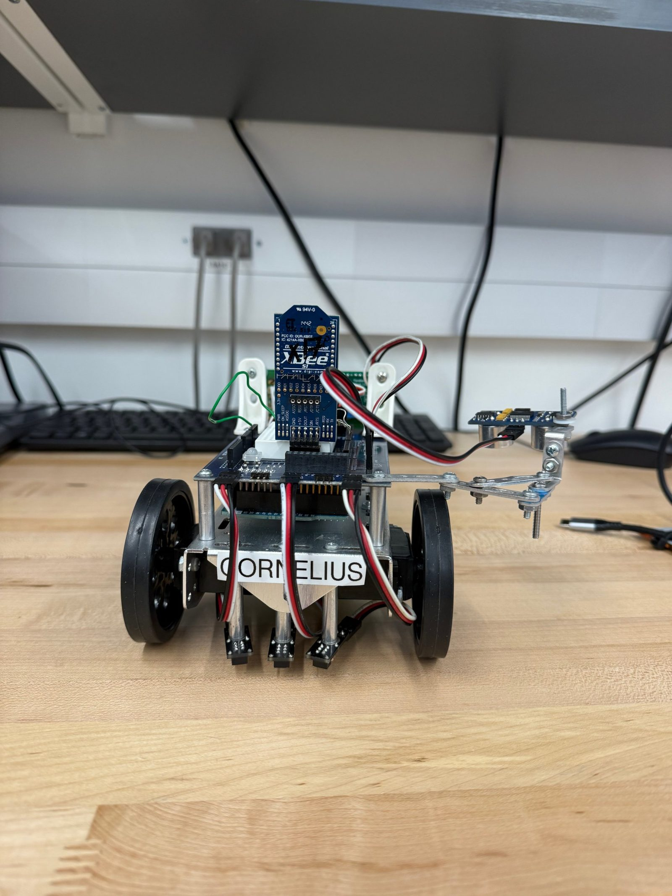
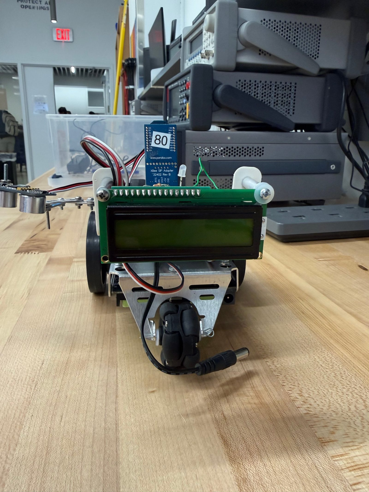

ENGINEERING PROJECT · ECE 110L INTEGRATED DESIGN CHALLENGE
Autonomous Robot
Control & Communication
"Jurassic Duke" — Line-Following, Sensing & Wireless Coordination

Programming a robot to navigate, sense, and communicate on its own.
For ECE 110L's Integrated Design Challenge — a dinosaur-themed course competition called "Jurassic Duke" — my partner and I programmed an Arduino-based robot, Cornelius, to autonomously follow a line, detect objects at checkpoints along the way, and wirelessly coordinate with four other robots to choose a safe route off of a simulated, dinosaur- overrun campus.
Each robot was responsible for one sensor and one communication task. Ours used an ultrasonic (ping) sensor to detect objects at each checkpoint, while onboard and external RGB LEDs signaled what the robot was doing in real time — sensing, transmitting, or receiving data over XBee. Once every robot's readings were shared, each bot calculated and displayed the group's full dataset on an LCD and performed a synchronized celebration based on the selected route.
Line Following & Navigation
Co-programmed the robot in C++ using QTI sensors to follow the track and detect checkpoints, adjusting servo-driven movement in response.
Object Sensing
Used an ultrasonic sensor to detect objects at each checkpoint, flashing an external RGB LED to indicate a positive or negative reading.
Wireless Communication & Display
Co-developed route-selection logic combining local readings with XBee data from four other robots, displaying the full dataset on an onboard LCD.
